Case Study • Sandia Labs / IHS
2015-2026 • Department of Energy

Case Study • Sandia Labs / IHS
2015-2026 • Department of Energy
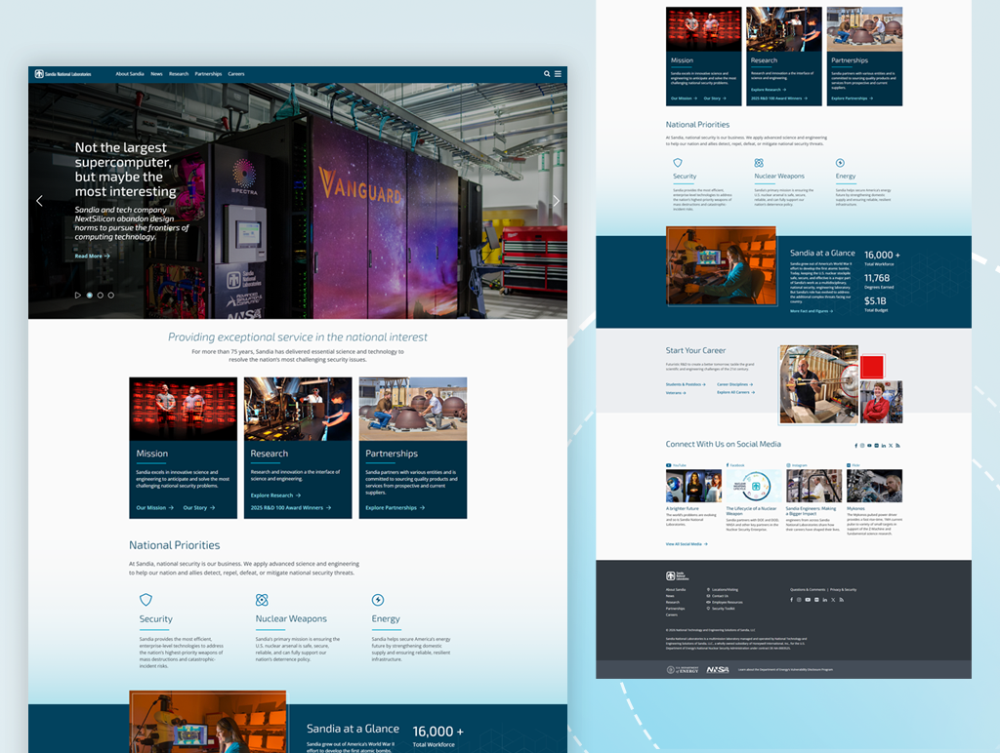
Desc:Design & development of internal & external web systems
Role:Senior UX/UI designer and developer
Team:Cross-functional product team
Contract:Edgewater Federal • SAIC
Timeline:2015-2026
As a federal contractor at Sandia National Laboratories for 11 years, I led and contributed to diverse cross-functional product teams. My contributions spanned small-scale feature enhancements, custom graphics creation, and large-scale, nationally recognized digital redesigns. Today, Sandia continues to leverage my design and development expertise for high-impact projects.
By 2025, Sandia's public-facing website required a comprehensive modernization. Following a 2023 migration from Cascade Server CMS to WordPress, fragmented styling and broken layouts had compromised the user experience.
The objective was to restore visual consistency, align the platform with modern web and usability standards, and build a streamlined system for content creators.
Translated user research insights into comprehensive wireframes and user flows. Led the creative direction to establish a cohesive visual identity aligned with corporate design standards.
Designed graphics and built high-fidelity interactive prototypes in Axure RP. Wrote clean JavaScript interactions and foundational CSS to accelerate engineering handoffs.
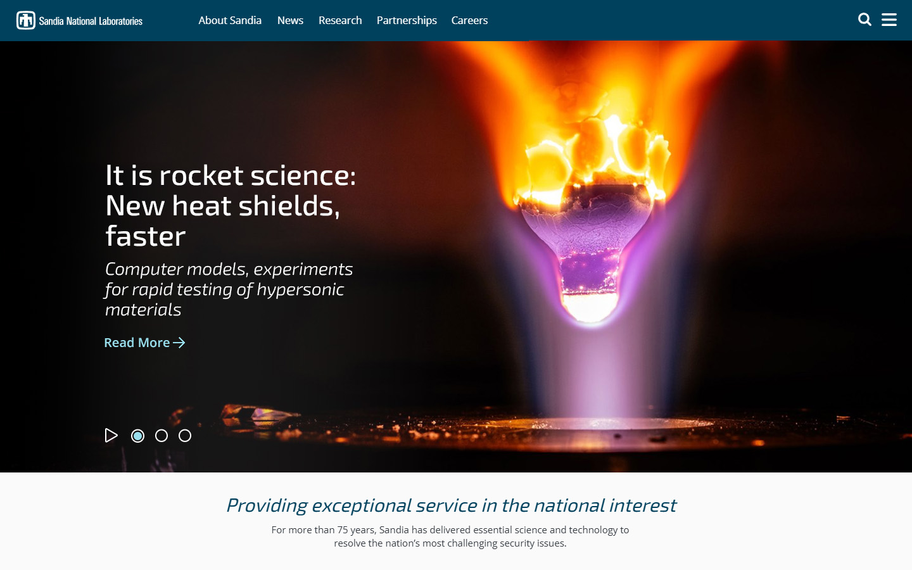
01GLOBAL NAVIGATION & HERO SHELL • UX/UI design and front-end architecture for the main landing page. Streamlined the primary global header navigation and engineered a Section 508-compliant multimedia gallery interface.
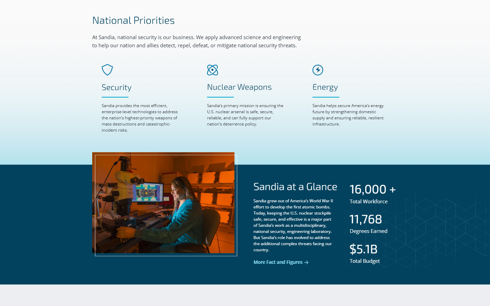
02CONTENT ARCHITECTURE & INLINE INTERACTIONS • Structural design and engineering of modular layouts. Created a custom system iconography set and developed high-performance, accessible UI component animations using JavaScript and CSS.
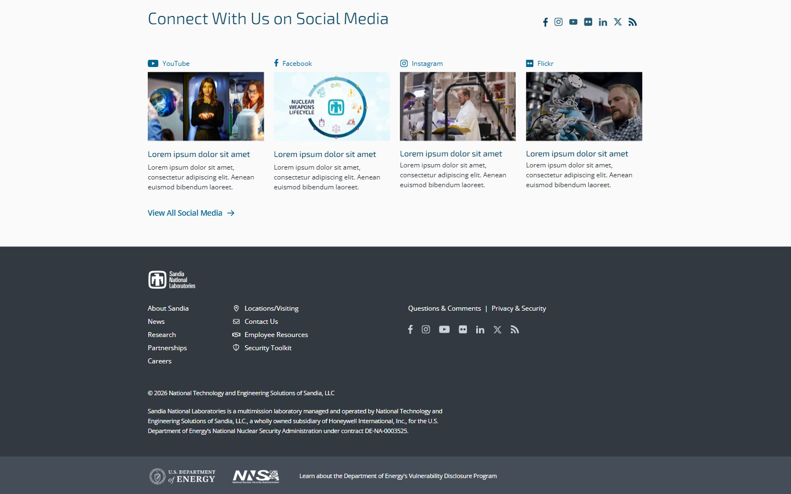
03UNIVERSAL ACCESSIBLE FOOTER • Information architecture layout focused on complex site maps. Developed strict Section 508-compliant linking matrices, federal disclosure integrations, and cross-browser responsive layouts.
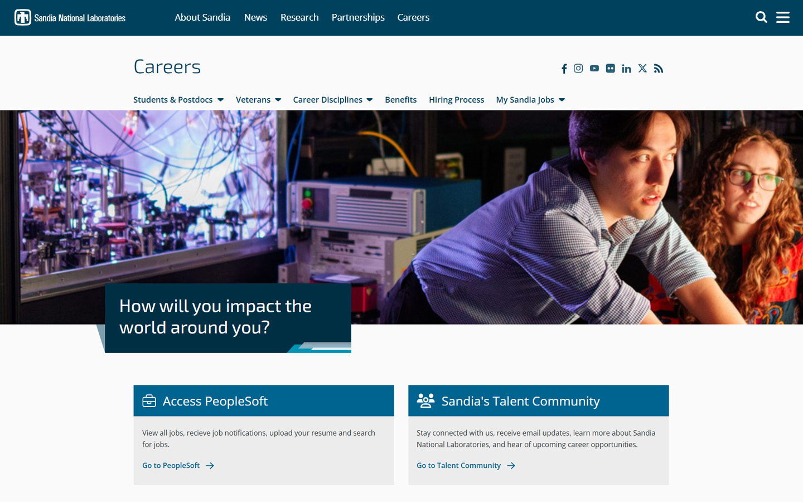
04HIGH-PRIORITY PORTAL TEMPLATE • UX/UI design and layout development for core sub-sections. Engineered localized hero layouts and multi-level structural navigation menus optimized for secure talent acquisition workflows.
As the Lead UX/UI Designer and Front-End Developer, I headed a core team—including a backend developer and a business analyst—to overhaul Sandia's external web presence, which had not been updated since 2010. While maintaining the existing information architecture, we partnered with the Communications department to deliver a modernized aesthetic and establish a new, Labs-wide UI library for all internal and external web platforms.
The sandia.gov 2019 comprehensive redesign was honored nationally, where it won Gold and Best-In-Show awards at the Public Relations Society of America's annual awards. By pairing rigorous user research with a cutting-edge front-end framework, the redesign not only elevated Sandia's digital brand value but also established a gold standard for public-sector usability and design excellence.
Led market research and discovery efforts. Designed user flows, wireframes, and mockups grounded in user personas and foundational UX research insights.
Curated mood boards and established a cohesive design system that scaled into a comprehensive, Labs-wide digital pattern library. Built high-fidelity interactive prototypes.
Authored clean HTML and CSS layouts from scratch. Assured strict compliance with WCAG accessibility requirements and industry-standard usability guidelines.
Spearheaded rigorous QA testing and facilitated cross-functional peer reviews to ensure final design and development deliverables met rigorous laboratory standards.
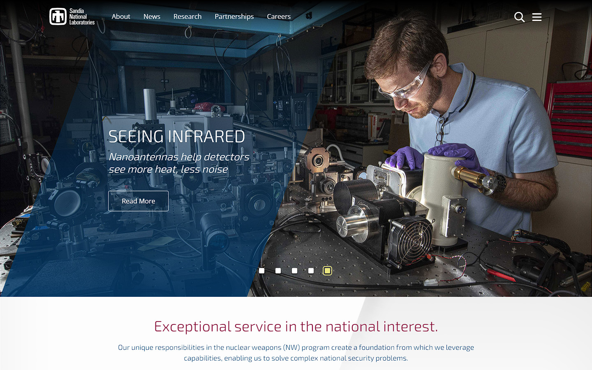
01HOMEPAGE OVERHAUL • Complete UX/UI overhaul and front-end development. Designed a modernized visual architecture, global navigation framework, and Section 508-compliant rich media showcase.
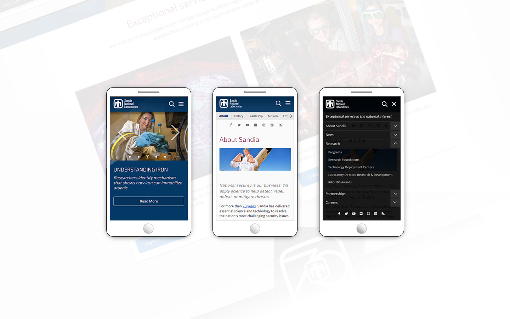
02RESPONSIVE ARCHITECTURE • Responsive front-end engineering built to map complex data tables onto mobile displays. Employs fluid layouts, optimized media assets, and touch-target accessibility patterns.
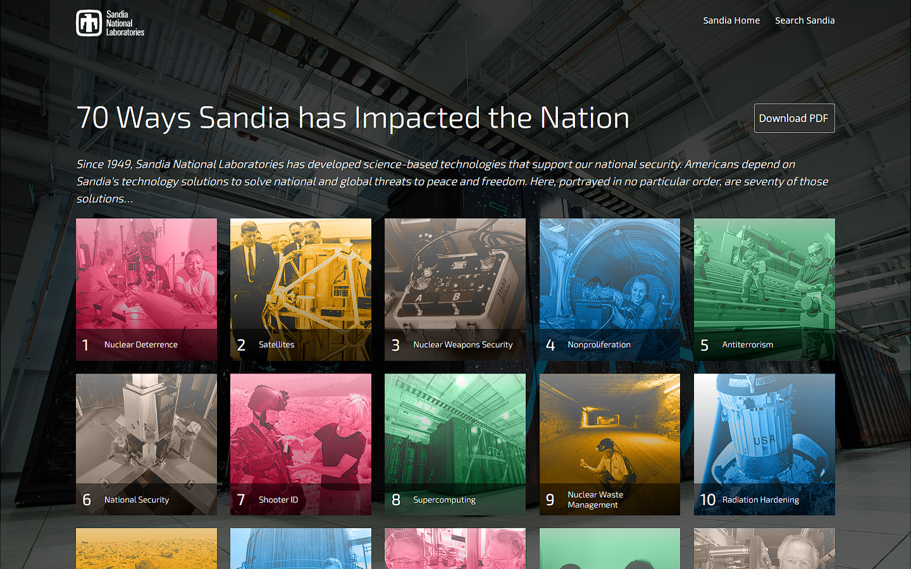
03NATIONAL IMPACT SHOWCASE • Interface design and web layout development for a high-profile commemorative digital initiative. Engineered highly usable interactive content streams highlighting laboratory achievements.
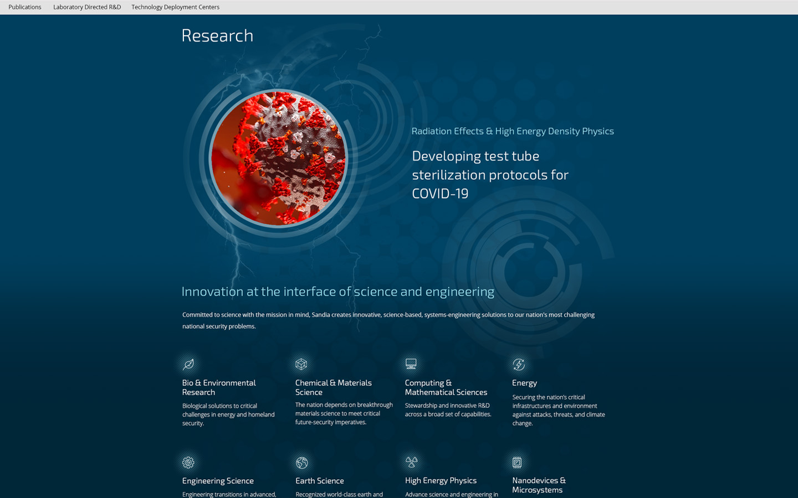
04RESEARCH ENGINE PORTAL • Specialized information architecture design for data-heavy directories. Hand-coded multi-level navigation trees and accessible web layouts matching strict federal compliance rules.
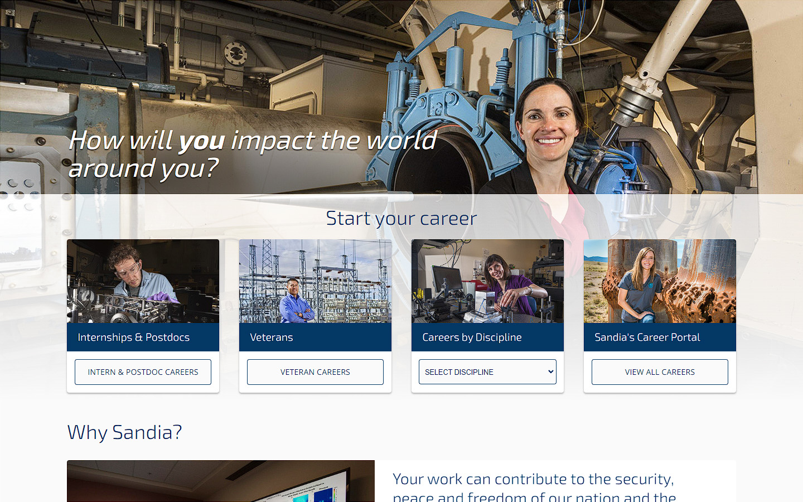
05CAREERS PORTAL & UI KIT • UX/UI strategy and functional prototyping for recruitment portals. Engineered reusable, accessible interface modules, interactive tabs, and structural application forms.
Parallel to public-facing initiatives, I led and took end-to-end ownership of dozens of internal web projects within Sandia's restricted networks. These applications ranged from small tactical tools to large-scale enterprise systems. On each project, stakeholder teams sought out my expertise to deconstruct complex technical workflows and architect modern, durable, and user-centric usability frameworks.
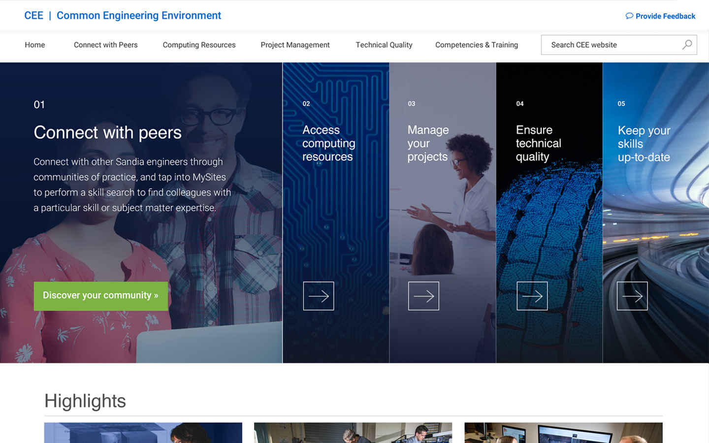
01COMMON ENGINEERING ENVIRONMENT • Complete UX/UI design and front-end development for a mission-critical internal portal. Engineered high-density information architecture layouts, bespoke vector graphics, and accessible data matrices.
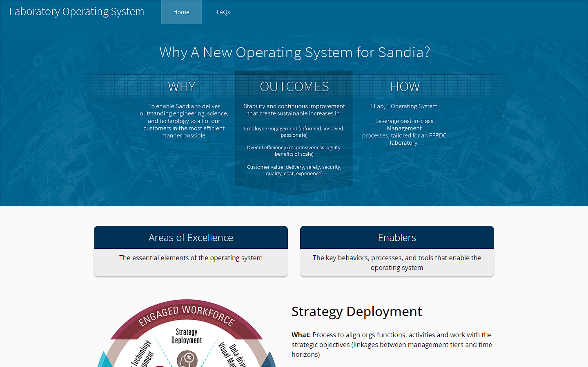
02LAB OPERATING SYSTEM • Interface layout and development for a core operations application. Transformed complex administrative workflows into streamlined, user-friendly dashboards while maintaining strict Section 508 accessibility compliance.
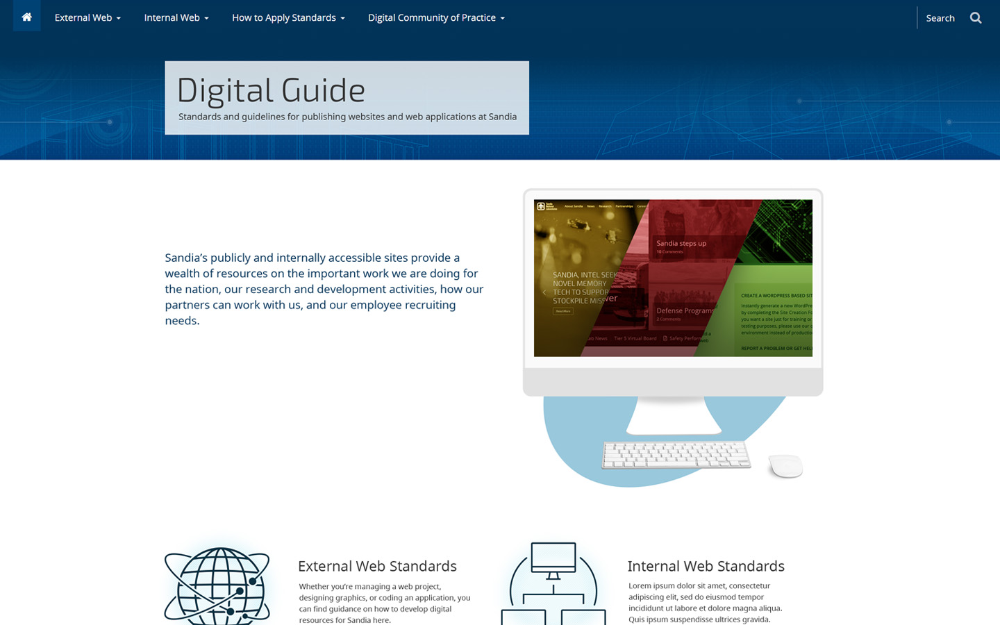
03DIGITAL REFERENCE GUIDE • Interactive product design and client-side engineering for an enterprise-wide resource manual. Features reusable UI components, clean typography hierarchies, and mobile-optimized responsive views.
Want to see how this technical expertise can translate to your next project?